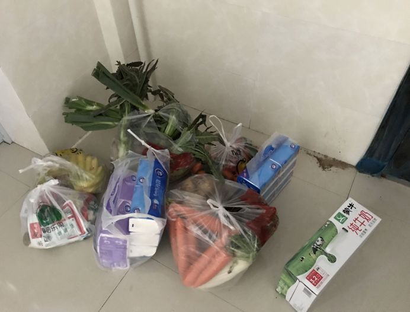

武汉90后临时外卖员：我多跑一单，就减少一个家庭感染的可能
原文链接 备份链接 健身教练辛野和他送外卖的电动车 90后健身教练辛野， 在武汉封城之后， 苦于市民买日常用品非常不便， 骑手平台订单爆满也没有人接， 于是，他下载了骑手软件， 成为一名临时外卖员。 武汉街上还在奔波的人就是外卖员，辛野 …
若干年后回望，这一定是一段值得铭记的日子。因为新型冠状病毒感染的肺炎疫情，许多家庭无法团圆。疫情数据地图的每次刷新都令人揪心。我们和千万武汉人在一起，这不只是一句安慰，因为没有人能够置身事外。
之前，我们向用户征集这段时间的故事，鼓励大家写下属于自己的“武汉日志”。现在，我们挑选出其中的几篇，分享给大家。
医生们追求，有时去治愈、常常去帮助、总是去安慰。我们相信，尽可能分享有关此次疫情的事实，对他人就是一种安慰剂，能够帮助社会共克时艰。
如果你还有愿意记录下来的故事，欢迎继续发给我们，文字、图片、视频均可，如果您没有时间成文或拍摄，可提供线索并留下联系方式。
要求真实、原创，文字内容不少于1000字，发送时请注明署名及联系方式。
中国青年报社征集邮箱：wuhanstory@126.com

作者 | 曹瑾
今天是武汉“封城”第20天，封小区的第12号令也在凌晨(指2月11日凌晨，武汉市新冠肺炎疫情防控指挥部发布的第12号通告——编者注)发布出来。
这20天里，我因买药出去一次，取快递出去两次，买口罩、消毒液、青菜出去一次。家里的食物越来越少，我研究了美菜、美团、中百多点、友家铺子、食享会、长江严选……等各种线上购菜的APP，最后在长江严选上买了一箱鸡蛋（360枚）和一箱沃柑。9号下午下的单，可能明天就能到了。费了不少周折，终于找到了物业群，看到群里团购肉食，每份5斤，有3种，牛腩、排骨、精瘦肉各样买了一份，肉、蛋、水果都有着落了。
社区通知每户每三天可派一人出去买菜，这个消息敦促着我出去冒险。下午1点半，戴好帽子、口罩、一次性手套的我就杀了出去，在超市里买了盐、卤料、蒸肉粉为即将到手的肉做好准备，还买了4提纸巾和一箱牛奶。超市进门时要测量体温，超市里在进行消毒，消毒水的味道闻起来让人安心不少。想买面粉，一直没找到，一问才知道面粉现在特别俏，上午10点一上货就卖完了，我这赶在超市关门前的就不要想了。
既然出来一趟不容易，再去买点菜吧。赶往菜市场，我今天穿的有点少，没有穿毛衣，但总觉得后背时而凉飕飕，时而微微发热。菜市场的人并不多，我看到有水果摊开张，就买了一串香蕉，5斤沙糖桔，还给家里的小家伙买了十来个草莓。去菜摊上买菜，土豆、胡萝卜、莴苣、大葱、菜苔、红薯、小白菜、蘑菇、冬瓜、小黄瓜。结账时，我脑袋是懵的，老板说多少钱就是多少钱，满心惊慌，感觉自己的呼吸都急促了。蔬菜和水果很重，我拎起来很费力，在我前面十米左右有个阿姨，她说你找个人帮忙。我抬头看看，空空的通道上，只有我们两个人，我说我能行。走几步，停一下换换手。
所有的脑细胞都在想该怎么放置这些物资，才能把它们都运回家。终于我把车子塞得满满当当。定了定神，骑车回家。
快到小区门口时，路不太平，放在电瓶车后座的纸巾掉了下来。我立马停车，转身就看到了一个刚出小区门的婆婆捡起了我掉的那提纸巾，转身就骑上自行车走了。我也不想去追，因为不想费口舌，不想和别人接触，更不想在外面耽误一分钟的时间。东西不值钱，关键是难得买，出来一趟并不容易，需要鼓足极大的勇气，怕万一被感染了。

到家后，我换了一双手套，把物资重新归置一下。然后去洗手、洗澡，所有的衣服用消毒液清洗。
认认真真用酒精把手机擦了5分钟，用掉了6张酒精棉片。恨不得把手机用流动的水和洗手液清洗一番。
一切收拾妥当，小家伙午睡睡醒了。我觉得嗓子有点痒，想咳又不敢咳。回放今天出去后的所有细节，应该是没有问题的。但还是有点担心。
每次想咳嗽，就喝点水，去量体温。时不时地给小家伙量量体温，担心啊！想起来，朋友说她自己觉得腰背疼，做了一番思想斗争去了医院检查，医生说没事。第二天她就觉得自己就好了，可能在家抱孩子抱的腰疼背疼的。
我也想去做检查，去去心里的疑虑。每天早上睁开眼，发现家里人没有病症，就长舒一口气。
“封城”20天后，我出去买菜了，我真的很害怕。我想知道这种充满恐惧的生活还要持续多久，多希望有一天起来，发现疫情解除了，隔离解除了，我们自由了！
中国青年报·中青在线出品
微信编辑 | 陈轶男

觉得好看请点这里
原文链接 备份链接 健身教练辛野和他送外卖的电动车 90后健身教练辛野， 在武汉封城之后， 苦于市民买日常用品非常不便， 骑手平台订单爆满也没有人接， 于是，他下载了骑手软件， 成为一名临时外卖员。 武汉街上还在奔波的人就是外卖员，辛野 …
原文链接 备份链接 一场新冠肺炎疫情打乱了所有人的生活节奏，医生不眠不休走上抗疫最前线，企业加班加点生产防护物资，民间组织合力协调各方力量，也有热心人力所能及为抗疫出一分力 文｜《财经》记者 马霖 编辑｜余乐 整个春节期间，武汉的街道不 …
原文链接 备份链接 口述者 新余市渝水区委常委、宣传部部长何智勇 整理：胡光华 张青青 我和文峰、陈山两位同志经过再三考虑，决定顶住压力，从2月3日晚上9点开始对绿景水岸小区实行全封闭式管理。春龙社区绿景水岸小区是新余市疑似“超级传播者” …
原文链接 备份链接 _ _ _ _ 导语: 武汉疫情发生后，牵动人心。它是中国自SARS以来最严重的公共卫生事件，也是我们这代人不可遗忘的记忆。疫情期间，微思客将开启“疫情”专题，诚邀各位专家及读者来稿，我们会定期更新优质稿件，这些记录都 …
原文链接 备份链接 原本打算在春节期间大有作为的餐饮业，被疫情来了一次“精确打击”。在现金流高度紧张的情况下，很多停摆企业仅能维持2-3个月。在一些从业者看来，真正的挑战在复工之后，疫情可能会带来餐饮业的一次洗牌。 记者 | …